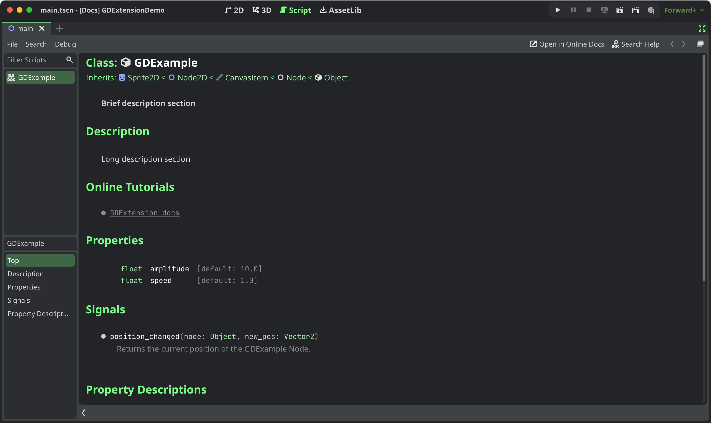

Thêm tài liệu
Ghi chú
Chỉ có thể thêm tài liệu cho GDExtension với Godot 4.3 trở lên.
Hệ thống tài liệu GDExtension hoạt động tương tự như tài liệu tích hợp sẵn của engine: Nó dùng các file XML (mỗi lớp một file) để mô tả các constructor, thuộc tính, phương thức, hằng số, signal được cung cấp, và hơn thế nữa.
Để bắt đầu, hãy xác định thư mục dự án thử nghiệm của dự án bạn, thư mục này nên chứa một dự án Godot đã cài đặt và chạy được extension của bạn. Nếu bạn đang dùng godot-cpp-template, dự án GDExtension của bạn đã có sẵn thư mục project. Nếu không, bạn có thể thêm một thư mục bằng cách làm theo các bước được mô tả trong Bắt đầu. Bên trong thư mục project, chạy lệnh terminal sau:
# Replace "godot" with the full path to a Godot editor binary
# if Godot is not installed in your `PATH`.
godot --doctool ../ --gdextension-docs
Lệnh này yêu cầu Godot tạo tài liệu thông qua các lệnh --doctool và --gdextension-docs. Đối số ../ chỉ định đường dẫn gốc của GDExtension.
Sau khi chạy lệnh này, bạn sẽ thấy các file XML cho các lớp GDExtension đã đăng ký bên trong thư mục doc_classes trong dự án GDExtension. Bạn có thể chỉnh sửa chúng ngay, nhưng với bài hướng dẫn này, các file trống là đủ.
Giờ bạn đã có các file XML chứa tài liệu, bước tiếp theo là đưa chúng vào binary GDExtension. Giả sử bạn đang dùng SCons làm hệ thống build, bạn có thể thêm các dòng sau vào file SConstruct. Nếu bạn đang dùng godot-cpp-template, file của bạn đã có sẵn mã cho việc này.
if env["target"] in ["editor", "template_debug"]:
doc_data = env.GodotCPPDocData("src/gen/doc_data.gen.cpp", source=Glob("doc_classes/*.xml"))
sources.append(doc_data)
Câu lệnh if tránh việc thêm tài liệu vào các bản build release của GDExtension, nơi không cần đến nó. Sau đó SCons nạp mọi file XML bên trong thư mục doc_classes và nối các target kết quả vào mảng sources để đưa vào bản build GDExtension.
Sau khi build, hãy chạy lại dự án Godot. Bạn có thể mở tài liệu của một trong các lớp extension bằng Ctrl + Click trên tên lớp trong trình soạn thảo script, hoặc tìm nó trong hộp thoại trợ giúp của trình chỉnh sửa. Nếu mọi thứ suôn sẻ, bạn sẽ thấy một thứ giống như sau:

Viết và định dạng tài liệu
Định dạng của các file XML tài liệu tham khảo lớp giống với định dạng Godot sử dụng. Nó được mô tả trong Nhập môn tài liệu tham chiếu lớp.
Nếu bạn đang tìm gợi ý để viết tài liệu chất lượng cao, cứ thoải mái tham khảo hướng dẫn viết tài liệu của Godot.
Xuất bản tài liệu trực tuyến
Bạn có thể muốn xuất bản tài liệu tham khảo trực tuyến cho GDExtension của mình, tương tự trang web này. Bước quan trọng nhất là build các file reStructuredText (.rst) từ tài liệu tham khảo lớp XML:
# You need a version.py file, so download it first.
curl -sSLO https://raw.githubusercontent.com/godotengine/godot/refs/heads/master/version.py
# Edit version.py according to your project before proceeding.
# Then, run the rst generator. You'll need to have Python installed for this command to work.
curl -sSL https://raw.githubusercontent.com/godotengine/godot/master/doc/tools/make_rst.py | python3 - -o "docs/classes" -l "en" doc_classes
Các file .rst giờ sẽ có trong docs/classes/. Từ đây, bạn có thể dùng bất kỳ công cụ build tài liệu nào hỗ trợ cú pháp reStructuredText để tạo một trang web từ chúng.
godot-docs dùng Sphinx. Bạn có thể dùng kho này làm nền tảng để xây dựng hệ thống tài liệu của riêng mình. Hướng dẫn sau mô tả các bước cơ bản, nhưng chưa đầy đủ: bạn sẽ cần một chút hiểu biết riêng để làm cho nó hoạt động.
Thêm godot-docs làm submodule vào thư mục
docs/của bạn.Sao chép các file
conf.py,index.rst,.readthedocs.yamlcủa nó vào/docs/. Sau này bạn có thể quyết định sao chép và chỉnh sửa thêm các file khác của godot-docs, như_templates/layout.html.Chỉnh sửa các file này cho phù hợp với dự án của bạn. Việc này chủ yếu là điều chỉnh các đường dẫn để trỏ tới thư mục con
godot-docs, cũng như các chuỗi để thể hiện rằng bạn đang build tài liệu cho dự án của mình chứ không phải cho Godot.Tạo tài khoản trên readthedocs.org. Import dự án của bạn, và sửa đường dẫn file
.readthedocs.yamlcơ sở thành/docs/.readthedocs.yaml.
Sau khi hoàn tất mọi bước này, tài liệu của bạn sẽ có tại <repo-name>.readthedocs.io.